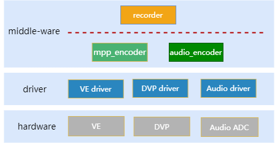
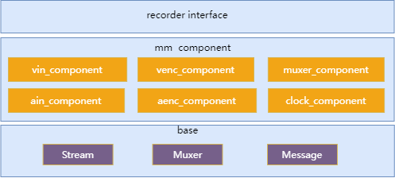

设计说明
15 Jan 2024
Read time: 15 minute(s)
源码说明
本模块源码位于 source/artinchip/aic-mpp/middle_media 下，目录结构如下
aic-mpp
|--middle-media
|-base
| |-inlcude
| | |-aic_message.h //定义公共消息接口
| | |-aic_muxer.h //定义 muxer 接口
| | |-aic_stream.h //定义 stream 接口
| |
| |-message //消息接口具体实现
| |-muxer //muxer 接口具体实现
| |-stream //stream 接口具体实现
|
|-component //Recorder 组件
| |-src //middle media component 各组件具体实现
| | |-mm_muxer_component.c //封装组件,编码后封装成指定格式
| | |-mm_venc_component.c //视频编码组件，输入 YUV 数据，输出编码后的视频图像
| | |-mm_vin_component.c //视频输入组件，支持 DVP 和 文件输入
| |-mm_core.c //middle media component 公共核心接口具体实现
| |-inlcude //middle media component 公共头文件
| |-mm_component.h //middle media 各组件通用接口
| |-mm_core.h //middle media 组件对外核心接口
| |-mm_index.h //middle media 组件公共结构体
|
|-recorder
|-inlcude
| |-aic_recorder.h //recorder 接口定义
|
|aic_recorder.c //recorder 接口实现
模块架构
recorder 在系统架构中的层次如下图

-
recorder 是中间件，向 App 提供 recorder 接口
-
recorder 视频编码调用 mjpeg_encoder
-
recorder 音频编码调用 暂未实现
-
recorder 视频输入操作 DVP driver 和 MPP VIN 提供的接口
-
recorder 音频输入操作 暂未实现
-
recorder 内部实现封装的功能
-
recorder 模块架构如下图,分为 3 层
-
第 1 层,recorder interface ,向上提供 recorder 接口,向下调用 mm 组件实现 recorder 功能。
-
第 2 层,component,提供统一的组件操作接口。每个组件完成特定的功能,比如视频编码,视频渲染等。
-
第 3 层,Base，提供 muxer，stream，message 接口和实现。
-
recorder 提供封装的功能，比如 MP4 封装
-
stream 提供封装流协议的功能，本地文件也看作是一种流协议，目前也只支持本地文件
-
message 为组件传递消息提供支持
-
目前支持 MP4 封装的本地文件，后续扩展其他流协议和封装格式，通过增加相应的 recorder 和 stream 实现
-

数据结构设计
//视频编码配置
struct video_encoding_config {
enum mpp_codec_type codec_type;
s32 out_width;
s32 out_height;
s32 out_bit_rate;
s32 out_frame_rate;
s32 out_qfactor;
// now must be out_width = in_width and out_height= in_height
// case mjpeg encoder has no scale function
s32 in_width;
s32 in_height;
s32 in_pix_fomat;
};
//音频编码配置
struct audio_encoding_config {
enum aic_audio_codec_type codec_type;
int out_bitrate;
int out_samplerate;
int out_channels;
int out_bits_per_sample;
int in_samplerate;
int in_channels;
int in_bits_per_sample;
};
//录像配置
struct aic_recorder_config {
int file_duration; // unit:second one file duration
int file_num; // 0-loop, >0 record file_num and then stop recording.
int file_muxer_type; // only support mp4
int qfactor;
s8 has_video;
s8 has_audio;
struct audio_encoding_config audio_config;
struct video_encoding_config video_config;
};
//抓拍信息
struct aic_record_snapshot_info {
s8 *file_path;
};
//录像事件类型
enum aic_recorder_event {
AIC_RECORDER_EVENT_NEED_NEXT_FILE = 0,
AIC_RECORDER_EVENT_COMPLETE, // when file_num > 0,record file_num then send this event
AIC_RECORDER_EVENT_NO_SPACE,
AIC_RECORDER_EVENT_RELEASE_VIDEO_BUFFER // notify app input_frame has used.
};
//视频输入源
enum aic_recorder_vin_type {
AIC_RECORDER_VIN_FILE = 0,
AIC_RECORDER_VIN_DVP,
AIC_RECORDER_VIN_USB,
};
//事件回调函数
typedef s32 (*event_handler)(void *app_data, s32 event, s32 data1, s32 data2);
接口设计
| 函数原型 | struct aic_recorder *aic_recorder_create(void) |
|---|---|
| 功能说明 | 创建 recorder 对象 |
| 参数定义 |
无
|
| 返回值 | recorder 对象 |
| 注意事项 | - |
| 函数原型 | s32 aic_recorder_destroy(struct aic_recorder *recorder) |
|---|---|
| 功能说明 | 销毁 recorder 对象 |
| 参数定义 |
recorder：recorder 对象
|
| 返回值 |
0：成功，其他：失败
|
| 注意事项 | 在 IDLE 和 STOPPED 状态起作用 |
| 函数原型 | s32 aic_recorder_init(struct aic_recorder *recorder, struct aic_recorder_config *recorder_config) |
|---|---|
| 功能说明 | 初始化 recorder 对象 |
| 参数定义 |
recorder：recorder 对象 recorder_config： recorder 配置
|
| 返回值 |
0：成功，其他：失败
|
| 注意事项 | 在 IDLE 和 STOPPED 状态起作用 |
| 函数原型 | s32 aic_recorder_start(struct aic_recorder *recorder) |
|---|---|
| 功能说明 | 启动录像，创建音视频编码线程和音视频输入线程 |
| 参数定义 | recorder：recorder 对象 |
| 返回值 |
0：成功，其他：失败
|
| 注意事项 | 在 PREPARED 状态起作用 |
| 函数原型 | s32 aic_recorder_stop(struct aic_recorder *recorder) |
|---|---|
| 功能说明 | 停止录像，释放音视频编码线程和音视频输入线程 |
| 参数定义 | recorder：recorder 对象 |
| 返回值 |
0：成功，其他：失败
|
| 注意事项 | 任意状态可以调用该函数来停止录像。切换文件时一定要调用 aic_recorder_stop。 |
| 函数原型 | s32 aic_recorder_set_input_file_path(struct aic_recorder *recorder, char *video_uri, char *audio_uri) |
|---|---|
| 功能说明 | 视频输入源为文件时，设置文件路径 |
| 参数定义 |
recorder：recorder video_uri：视频源文件路径
audio_uri：音频源文件路径
|
| 返回值 |
0：成功，其他：失败
|
| 注意事项 | 在 IDLE 和 STOPPED 状态起作用 |
| 函数原型 | s32 aic_recorder_set_output_file_path(struct aic_recorder *recorder,char *uri) |
|---|---|
| 功能说明 | 设置输出录像文件路径 |
| 参数定义 |
recorder：recorder 对象，uri：媒体文件路径
|
| 返回值 |
0：成功，其他：失败
|
| 注意事项 | 在 IDLE 和 STOPPED 状态起作用 |
| 函数原型 | s32 aic_recorder_set_event_callback(struct aic_recorder *recorder, event_handler event_handle) |
|---|---|
| 功能说明 | 设置录像事件回调函数 |
| 参数定义 |
recorder：recorder 对象，event_handle：监听事件函数
|
| 返回值 |
0：成功，其他：失败
|
| 注意事项 | 一定要注册，录像结束通过回调函数通知 |
| 函数原型 | s32 aic_recorder_snapshot(struct aic_recorder *recorder, struct aic_record_snapshot_info *snapshot_info) |
|---|---|
| 功能说明 | 触发一次抓拍事件 |
| 参数定义 |
recorder：recorder 对象，snapshot_info：抓拍信息
|
| 返回值 |
0：成功，其他：失败
|
| 注意事项 | 启动录像期间抓拍 |
| 函数原型 | s32 aic_recorder_set_vin_type(struct aic_recorder *recorder, enum aic_recorder_vin_type type); |
|---|---|
| 功能说明 | 设置视频输入源类型 |
| 参数定义 |
recorder：recorder 对象，type：视频输入源类型
|
| 返回值 |
0：成功，其他：失败
|
| 注意事项 | 无 |
APP Demo
static void print_help(const char* prog)
{
printf("name: %s\n", prog);
printf("Compile time: %s\n", __TIME__);
printf("Usage: recoder_demo [options]:\n"
"\t-i video input source\n"
"\t-c recoder config file\n"
"\t-h help\n\n"
"Example1: recoder_demo -i dvp -c /sdcard/recoder.json\n"
"Example2: recoder_demo -i file -c /sdcard/recoder.json\n");
}
char *read_file(const char *filename)
{
FILE *file = NULL;
long length = 0;
char *content = NULL;
size_t read_chars = 0;
/* open in read binary mode */
file = fopen(filename, "rb");
if (file == NULL) {
goto cleanup;
}
/* get the length */
if (fseek(file, 0, SEEK_END) != 0) {
goto cleanup;
}
length = ftell(file);
if (length < 0) {
goto cleanup;
}
if (fseek(file, 0, SEEK_SET) != 0) {
goto cleanup;
}
/* allocate content buffer */
content = (char *)malloc((size_t)length + sizeof(""));
if (content == NULL) {
goto cleanup;
}
/* read the file into memory */
read_chars = fread(content, sizeof(char), (size_t)length, file);
if ((long)read_chars != length) {
free(content);
content = NULL;
goto cleanup;
}
content[read_chars] = '\0';
cleanup:
if (file != NULL) {
fclose(file);
}
return content;
}
static cJSON *parse_file(const char *filename)
{
cJSON *parsed = NULL;
char *content = read_file(filename);
parsed = cJSON_Parse(content);
if (content != NULL) {
free(content);
}
return parsed;
}
struct recorder_context {
struct aic_recorder *recorder;
enum aic_recorder_vin_type vin_source_type;
char config_file_path[256];
char video_in_file_path[256];
char audio_in_file_path[256];
char output_file_path[256];
char capture_file_path[256];
struct aic_recorder_config config;
};
static int g_recorder_flag = 0;
static struct recorder_context *g_recorder_cxt = NULL;
static s32 event_handle(void *app_data, s32 event, s32 data1, s32 data2)
{
int ret = 0;
struct recorder_context *recorder_cxt = (struct recorder_context *)app_data;
static int file_index = 0;
char file_path[512] = {0};
switch (event) {
case AIC_RECORDER_EVENT_NEED_NEXT_FILE:
// set recorder file name
snprintf(file_path, sizeof(file_path), "%s-%d.mp4",
recorder_cxt->output_file_path, file_index++);
aic_recorder_set_output_file_path(recorder_cxt->recorder, file_path);
printf("set recorder file:%s\n", file_path);
break;
case AIC_RECORDER_EVENT_COMPLETE:
g_recorder_flag = 1;
break;
case AIC_RECORDER_EVENT_NO_SPACE:
break;
default:
break;
}
return ret;
}
int parse_config_file(char *config_file, struct recorder_context *recorder_cxt)
{
int ret = 0;
cJSON *cjson = NULL;
cJSON *root = NULL;
if (!config_file || !recorder_cxt) {
ret = -1;
goto _EXIT;
}
root = parse_file(config_file);
if (!root) {
loge("parse_file error %s!!!", config_file);
ret = -1;
goto _EXIT;
}
cjson = cJSON_GetObjectItem(root, "video_in_file");
if (!cjson) {
loge("no video_in_file error");
ret = -1;
goto _EXIT;
}
strcpy(recorder_cxt->video_in_file_path, cjson->valuestring);
cjson = cJSON_GetObjectItem(root, "audio_in_file");
if (!cjson) {
strcpy(recorder_cxt->audio_in_file_path, cjson->valuestring);
}
cjson = cJSON_GetObjectItem(root, "output_file");
if (!cjson) {
loge("no output_file error");
ret = -1;
goto _EXIT;
}
strcpy(recorder_cxt->output_file_path, cjson->valuestring);
cjson = cJSON_GetObjectItem(root, "file_duration");
if (cjson) {
recorder_cxt->config.file_duration = cjson->valueint * 1000;
}
cjson = cJSON_GetObjectItem(root, "file_num");
if (cjson) {
recorder_cxt->config.file_num = cjson->valueint;
}
cjson = cJSON_GetObjectItem(root, "qfactor");
if (cjson) {
recorder_cxt->config.qfactor = cjson->valueint;
}
cjson = cJSON_GetObjectItem(root, "video");
if (cjson) {
int enable = cJSON_GetObjectItem(cjson, "enable")->valueint;
if (enable == 1) {
recorder_cxt->config.has_video = 1;
}
recorder_cxt->config.video_config.codec_type =
cJSON_GetObjectItem(cjson, "codec_type")->valueint;
printf("codec_type:0x%x\n", recorder_cxt->config.video_config.codec_type);
if (recorder_cxt->config.video_config.codec_type != MPP_CODEC_VIDEO_DECODER_MJPEG) {
ret = -1;
loge("only support MPP_CODEC_VIDEO_DECODER_MJPEG");
g_recorder_flag = 1;
goto _EXIT;
}
recorder_cxt->config.video_config.out_width =
cJSON_GetObjectItem(cjson, "out_width")->valueint;
recorder_cxt->config.video_config.out_height =
cJSON_GetObjectItem(cjson, "out_height")->valueint;
recorder_cxt->config.video_config.out_frame_rate =
cJSON_GetObjectItem(cjson, "out_framerate")->valueint;
recorder_cxt->config.video_config.out_bit_rate =
cJSON_GetObjectItem(cjson, "out_bitrate")->valueint;
recorder_cxt->config.video_config.in_width =
cJSON_GetObjectItem(cjson, "in_width")->valueint;
recorder_cxt->config.video_config.in_height =
cJSON_GetObjectItem(cjson, "in_height")->valueint;
recorder_cxt->config.video_config.in_pix_fomat =
cJSON_GetObjectItem(cjson, "in_pix_format")->valueint;
}
cjson = cJSON_GetObjectItem(root, "audio");
if (cjson) {
int enable = cJSON_GetObjectItem(cjson, "enable")->valueint;
if (enable == 1) {
recorder_cxt->config.has_audio = 1;
}
recorder_cxt->config.audio_config.codec_type =
cJSON_GetObjectItem(cjson, "codec_type")->valueint;
recorder_cxt->config.audio_config.out_bitrate =
cJSON_GetObjectItem(cjson, "out_bitrate")->valueint;
recorder_cxt->config.audio_config.out_samplerate =
cJSON_GetObjectItem(cjson, "out_samplerate")->valueint;
recorder_cxt->config.audio_config.out_channels =
cJSON_GetObjectItem(cjson, "out_channels")->valueint;
recorder_cxt->config.audio_config.out_bits_per_sample =
cJSON_GetObjectItem(cjson, "out_bits_per_sample")->valueint;
recorder_cxt->config.audio_config.in_samplerate =
cJSON_GetObjectItem(cjson, "in_samplerate")->valueint;
recorder_cxt->config.audio_config.in_channels =
cJSON_GetObjectItem(cjson, "in_channels")->valueint;
recorder_cxt->config.audio_config.in_bits_per_sample =
cJSON_GetObjectItem(cjson, "in_bits_per_sample")->valueint;
}
_EXIT:
if (root) {
cJSON_Delete(root);
}
return ret;
}
static int parse_options(struct recorder_context *recoder_ctx, int cnt, char **options)
{
int argc = cnt;
char **argv = options;
struct recorder_context *ctx = recoder_ctx;
int opt;
if (!ctx || argc == 0 || !argv) {
loge("para error !!!");
return -1;
}
optind = 0;
while (1) {
opt = getopt(argc, argv, "i:c:h");
if (opt == -1) {
break;
}
switch (opt) {
case 'i':
if (strcmp(optarg, "dvp") == 0) {
ctx->vin_source_type = AIC_RECORDER_VIN_DVP;
} else {
ctx->vin_source_type = AIC_RECORDER_VIN_FILE;
}
break;
case 'c':
strcpy(ctx->config_file_path, optarg);
break;
case 'h':
default:
print_help(argv[0]);
return -1;
}
}
return 0;
}
static void show_cpu_usage()
{
#if defined(LPKG_USING_CPU_USAGE) && defined(RECODER_DEMO_PRINT_CPU)
static int index = 0;
char data_str[64];
float value = 0.0;
if (index++ % 30 == 0) {
value = cpu_load_average();
#ifdef AIC_PRINT_FLOAT_CUSTOM
int cpu_i;
int cpu_frac;
cpu_i = (int)value;
cpu_frac = (value - cpu_i) * 100;
snprintf(data_str, sizeof(data_str), "%d.%02d\n", cpu_i, cpu_frac);
#else
snprintf(data_str, sizeof(data_str), "%.2f\n", value);
#endif
printf("cpu_loading:%s\n",data_str);
}
#endif
}
static void *test_recorder_thread(void *arg)
{
struct recorder_context *recorder_cxt = (struct recorder_context *)arg;
while (!g_recorder_flag) {
show_cpu_usage();
usleep(100*1000);
}
if (recorder_cxt && recorder_cxt->recorder) {
aic_recorder_stop(recorder_cxt->recorder);
aic_recorder_destroy(recorder_cxt->recorder);
recorder_cxt->recorder = NULL;
}
if (recorder_cxt) {
free(recorder_cxt);
recorder_cxt = NULL;
}
printf("test_recorder_thread exit\n");
return NULL;
}
#define BUFFER_LEN 32
int recorder_demo_test(int argc, char *argv[])
{
int ret = 0;
pthread_attr_t attr;
pthread_t thread_id;
struct recorder_context *recorder_cxt = NULL;
g_recorder_flag = 0;
recorder_cxt = malloc(sizeof(struct recorder_context));
if (!recorder_cxt) {
loge("malloc error");
return -1;
}
memset(recorder_cxt, 0x00, sizeof(struct recorder_context));
if (parse_options(recorder_cxt, argc, argv)) {
goto _EXIT;
}
g_recorder_cxt = recorder_cxt;
if (parse_config_file(recorder_cxt->config_file_path, recorder_cxt)) {
loge("parse_config_file %s error", recorder_cxt->config_file_path);
goto _EXIT;
}
#ifdef _THREAD_TRACE_INFO_
memset(&thread_trace_infos,0x00,sizeof(struct thread_trace_info));
for (int i = 0; i < 6 ;i++) {
snprintf(thread_trace_infos[i].thread_name,sizeof(thread_trace_infos[i].thread_name),"%s%02d","pth",i);
printf("%s\n",thread_trace_infos[i].thread_name);
}
rt_scheduler_sethook(hook_of_scheduler);
#endif
recorder_cxt->recorder = aic_recorder_create();
if (!recorder_cxt->recorder) {
loge("aic_recorder_create error");
goto _EXIT;
}
if (aic_recorder_set_event_callback(recorder_cxt->recorder,
recorder_cxt, event_handle)) {
loge("aic_recorder_set_event_callback error");
goto _EXIT;
}
if (aic_recorder_init(recorder_cxt->recorder, &recorder_cxt->config)) {
loge("aic_recorder_init error");
goto _EXIT;
}
aic_recorder_set_vin_type(recorder_cxt->recorder, recorder_cxt->vin_source_type);
aic_recorder_set_input_file_path(recorder_cxt->recorder, recorder_cxt->video_in_file_path, NULL);
if (aic_recorder_start(recorder_cxt->recorder)) {
loge("aic_recorder_start error");
goto _EXIT;
}
pthread_attr_init(&attr);
attr.stacksize = 2 * 1024;
attr.schedparam.sched_priority = 30;
ret = pthread_create(&thread_id, &attr, test_recorder_thread, recorder_cxt);
if (ret) {
loge("create test_recorder_thread failed\n");
}
#include "msh.h"
msh_exec("ps \n", strlen("ps \n"));
return ret;
_EXIT:
if (recorder_cxt && recorder_cxt->recorder) {
aic_recorder_stop(recorder_cxt->recorder);
aic_recorder_destroy(recorder_cxt->recorder);
recorder_cxt->recorder = NULL;
}
if (recorder_cxt) {
free(recorder_cxt);
recorder_cxt = NULL;
}
return ret;
}
MSH_CMD_EXPORT_ALIAS(recorder_demo_test, recorder_demo, recorder demo);
int recorder_demo_cmd(int argc, char *argv[])
{
int ret = 0;
static int capture_count = 0;
struct recorder_context *recorder_cxt = g_recorder_cxt;
if (argc < 1) {
return -1;
}
if (strcmp(argv[1], "stop") == 0) {
g_recorder_flag = 1;
} else if (strcmp(argv[1], "snap") == 0) {
struct aic_record_snapshot_info snap_info;
snprintf(recorder_cxt->capture_file_path, sizeof(recorder_cxt->capture_file_path),
"/sdcard/capture-%d.jpg", capture_count++);
snap_info.file_path = (s8 *)recorder_cxt->capture_file_path;
aic_recorder_snapshot(recorder_cxt->recorder, &snap_info);
} else if (strcmp(argv[1], "debug") == 0) {
aic_recorder_print_debug_info(recorder_cxt->recorder);
}
return ret;
}
MSH_CMD_EXPORT_ALIAS(recorder_demo_cmd, recorder_demo_cmd, recorder demo cmd);